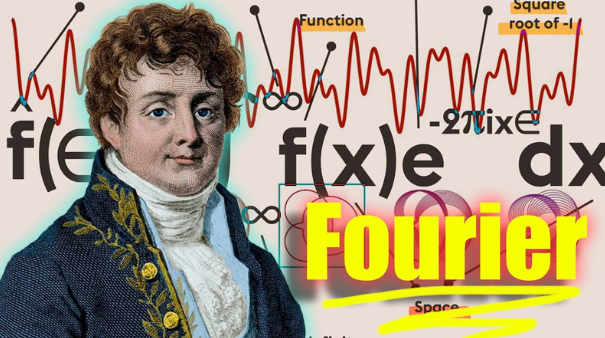

Transformaciones de Fourier: 1822
Descifrando el Lenguaje de las Frecuencias Las transformaciones de Fourier son herramientas matemáticas fundamentales que permiten descomponer una señal o función compleja en una suma de senos y cosenos de diferentes frecuencias. Esta descomposición facilita el análisis de fenómenos en el dominio de la frecuencia, lo cual es especialmente útil en disciplinas como la física, la ingeniería y el procesamiento de señales.
Volver a la página principal